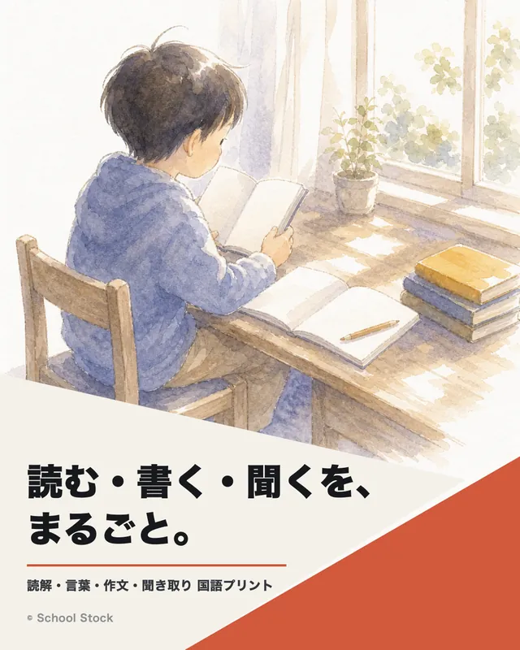
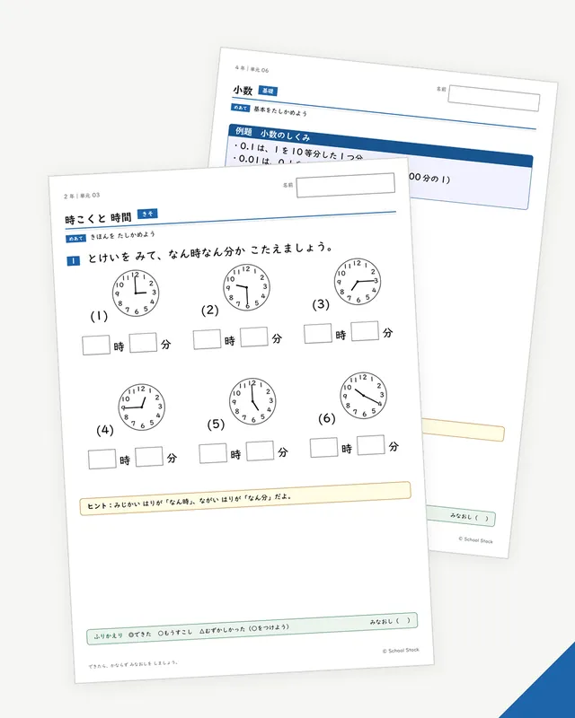
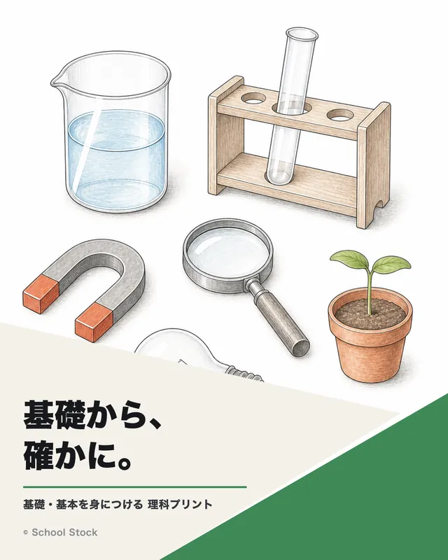
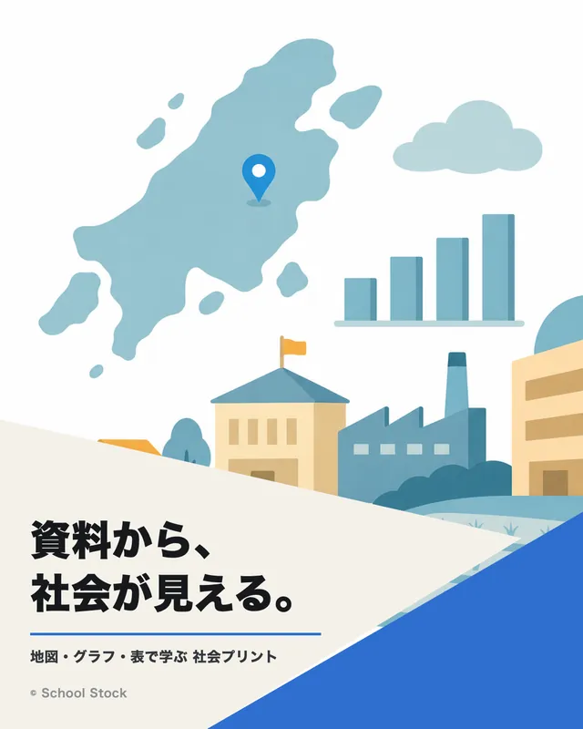
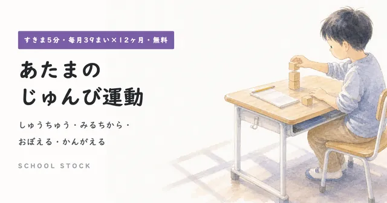
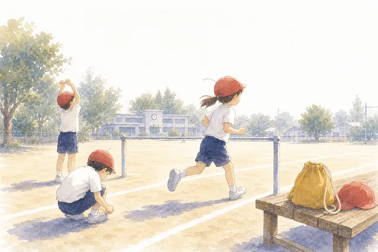
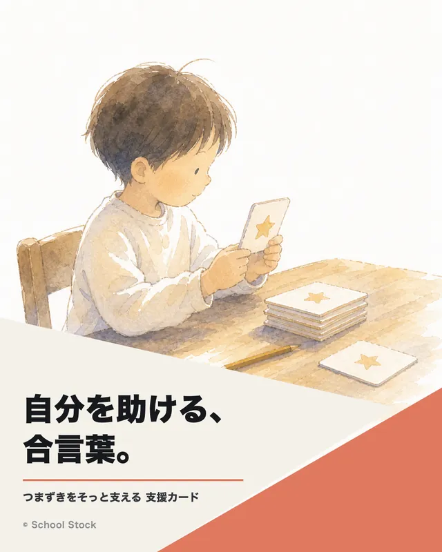
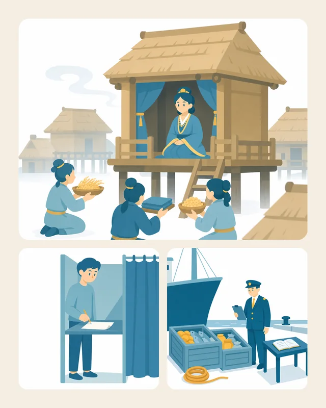
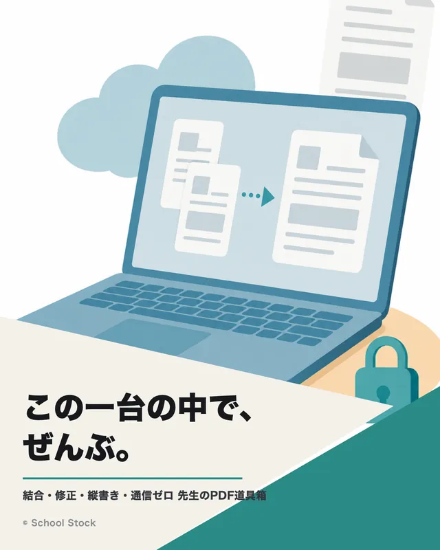

1
児童生徒のこと
名前・成績・作品・家庭のことは入れません。
必要なときは「Aさん」に置き換え、特徴だけを自分の言葉で書きます。
このサイトは、お三方のための研修サイトです。前半は共通、後半はお一人ずつのページに分かれます。話を聞く時間は短く、手を動かす時間を長く。その場で書き取っていただく必要はありません。
AIの基本を短く。そのあと、活用力の5段階の「地図」を広げて、ご自身の現在地に印を付けます。まとまった話はここだけです。
ワークは3つ。型を1本ためす、注文をつけて直す、自分専用のGemを作る。最後に、となりの先生と見せ合う2分を取ります。
お一人ずつのページと、お三方共通の「学校の仕事」のページ。現在地に合う一歩を、ひとつ決めて終わります。
守る線は3本だけです。この線さえ守れば、あとは安心してたくさん試せます。使う道具は、学校・自治体で認められているものの範囲で。
名前・成績・作品・家庭のことは入れません。
必要なときは「Aさん」に置き換え、特徴だけを自分の言葉で書きます。
教科書・市販教材・過去問の本文は入れません。
要点を自分の言葉のメモにしてから渡します。自作のメモやプリントは自由に使えます。
内部文書と、同僚・保護者の個人情報は入れません。
迷ったら入れない。これがいちばん確実です。
まとまった話はこの節だけです。覚えることは3つ。①なぜ間違えるか ②何が得意で何が苦手か ③プロンプトは4つの部品でできている、です。
生成AIは、調べて答えているのではありません。「次に来そうな言葉」を予測して文を作っています。だから文はきれいなのに、中身が事実と違うことがあります。うそをつこうとしているのではなく、仕組みがそうなっています。
最初の習慣はこれだけです。日付・名前・数字・出典は、確かめてから使う。文章の上手さと、事実の正しさは別ものです。
プロンプトの上手い下手より、「今日、何が終わればうれしいか」を一文で言えることのほうが効きます。「AIで何かできませんか」ではなく「学年通信の行事予定の表を作りたい」。ここが言えれば、あとは型に流し込むだけです。
使った量のあとに発想は出てきます。だから本日は、たくさん使える型を置いていきます。
| 得意（安心して任せられる） | 苦手（人が持つ） |
|---|---|
| 文章のたたき台（お便り・案内・要項の下書き） | 事実の保証（日付・固有名詞・出典） |
| 言い換え・要約・ふくらませ（同じ内容を別の言い方で） | 正確な計算・図やグラフの中の数字 |
| 案をたくさん出す（発問・レク・単元の導入） | 目の前の生徒に合うかの判断（先生の専門） |
| 型に沿った量産（同じ形式の問題・文例） | 学級・学校の事情（職員室で通るか） |
| 観点を変えた点検（抜け・漏れ・別の見方の指摘） | 責任を取ること（最後に判断するのは人） |
全国の生成AIパイロット校の分析でも、先生の使い方の1位は文書のたたき台づくり、次いで「計画・案の作成」「問題づくり」でした（52校・266事例の分析より）。特別なことをしなくていい、ということです。
ゼロから書きません。4つの部品でできた型を持ってきて、〔 〕だけ差し替えます。
| 部品 | 役目 | 例 |
|---|---|---|
| ① 役割 | 誰として答えるかを決める | 「あなたは中学校の学年通信の編集係です」 |
| ② 条件 | 前提・制約を伝える | 「読み手は保護者。ですます調。専門用語を使わない」 |
| ③ 出力の形 | どんな形で出すかを決める | 「見出し＋本文3文＋持ち物の箇条書き」 |
| ④ 〔差し替え〕 | 毎回変わる中身を入れる場所 | 「〔行事名〕〔日時〕〔持ち物〕」 |
操作の話に入る前に、地図を1枚だけ広げます。生成AIを使いこなす力は、5つの段階を通って育ちます。きょうの研修が扱うのは「いま、ご自身が地図のどこにいて、次の一歩は何か」です。操作の技能は、この地図の3分の1にすぎません。
この地図でいちばんお伝えしたいのは、段階が低いことは恥ではない、ということです。第1段階には第1段階の一人前があります（「何が終わればうれしいか」を一文で言えるのは、長い職務経験がある方ほど強い力です）。逆に、毎日使っている方が第5段階とも限りません。「あの人に聞けばよい」と頼られて負担が増えているなら、それは腕の問題ではなく「まだ手渡していない」だけです。
| 段階 | 決める（入口の判断） | 使う（中心の操作） | 見きわめる（出口の点検） |
|---|---|---|---|
| 1 言語化期目安：出会いの1週間 | 今日のタスクを定義できる。 例）「学年通信は、行事予定が正しく入って印刷に回せたら終わり」と言える |
対話で出力を直させられる。 例）長い下書きを「半分の長さで、保護者向けの言葉で」と注文し直す |
事実を確かめてから使える。 例）出てきた日付・数字を、元の資料と照らしてから配る |
| 2 模倣期目安：最初の1か月 | どの仕事にどの型を試すか選べる。 例）通信の下書き・所見の観点出しなど、定型の仕事から試す |
型の可変部だけ差し替えて使える。 例)型の〔メモ〕欄に自分のメモを入れて下書きを出す |
出力から型を評価できる。 例）「文が固い。文体の条件を足そう」と直しどころの見当がつく |
| 3 適合期目安：最初の1学期 | 人がやることとAIにさせることを、言葉で分けられる。 例）所見＝事実集めと中身の判断は人・文体の整えはAI、と分ける |
型を修正し、自作の資料で文脈を与えられる。 例）自作のプリントや過去の通信を手本に渡し、自分の調子に合わせる |
任せ所を判断し、入れない情報の線を引ける。 例）直しが減らない仕事は分解し直す。生徒名・成績・教科書本文は入れない |
| 4 構築期目安：1年目 | 仕組みにする仕事を選べる。 例）毎週の連絡・時数集計のように、繰り返す仕事から選ぶ |
Gem・GAS等で仕組みを組める。 例）通信のGemを常設する。集計をGASでアプリにする。NotebookLMで資料を焦点化する |
仕組みを検査できる。 例）出力をときどき抜き取りで確かめ、ずれてきたら設計を直す |
| 5 移転期目安：2年目以降 | 学校のどの仕事の流れから変えるかを決められる。 例）会議資料づくりの流れを図にし、データの所在を一覧にしてから着手する |
道具と手順書を共有資産にできる。 例）自分のGem・アプリ・手順書を学年や分掌の共有にし、誰でも使える形に整える |
運用を点検し、約束事を改訂できる。 例）使われ方や失敗例を集めて、手順書と校内の約束事を直す |
地図の5段階×3つのはたらきを、15の「できる」に分けました。いまの正直なところに印を付けてください。付かない項目が多いほど、伸びる場所がはっきりします。となりの先生と違って当然です。合っているかどうかより、「次の一歩」を決めるために使います。
「AIはいろいろできます」が、いちばん人を迷わせる言葉です。学校の仕事でよくある「やりたいこと」から、まず使う道具と、きょうの入口を1枚にまとめました。正解の表ではなく、入口の見取り図です。上の3行のどれかから始めれば、まず間違いありません。
| やりたいこと | まず使う道具 | きょうの入口 | 地図での段階 |
|---|---|---|---|
| お便り・案内・要項のたたき台 | Gemini | 型1 | 模倣期 |
| 発問・活動・レクの案をたくさん出す | Gemini | 型2 | 模倣期 |
| 自分の文章の点検（書き直させない） | Gemini | 型3 | 言語化期〜 |
| プロンプトそのものを作ってもらう | Gemini | 型4 | 模倣期〜適合期 |
| 厚い資料から要点を引く（進路資料・手引き・研究資料） | NotebookLM | 学校の仕事 | 適合期 |
| 自作教材を増やす・作り替える | Gemini ＋ ドキュメント／スライド | 社会科・国語 | 適合期 |
| 小テスト・アンケートのデジタル化と自動集計 | フォーム | Workspaceガイド | 構築期の入口 |
| 繰り返す連絡・集計を仕組みにする | Gemの常設 → GAS | 学校の仕事 | 構築期 |
| 教材の束を、探せる「棚」にする | 台帳（スプレッドシート）→ サイト | 社会科＋実例 | 構築期〜移転期 |
ここからが本日の中心です。じゅんびを入れて4つ、順番にいきます。それぞれのプロンプトは、ボタンひとつでコピーできます。「コピーしてGeminiを開く」を押すと、コピーと同時にGeminiが開きます。手が止まったら、その場でお声がけください。
当日ためす時間がなくても、この3本はそのまま持ち帰れます。〔 〕の差し替えだけで使えます。3本目は少し変わり種で、「プロンプトを作るためのプロンプト」です。
あなたは中学校〔2〕年〔社会〕の授業づくりの相談相手です。 単元〔 〕の導入で、生徒が「調べたい」と思う問いかけの案を10個、 短い一文でください。教室ですぐ使える言い方で。 実在の資料が要るものには（要資料）と付けてください。
次の文章は私が書いた〔学年通信の下書き〕です。 ①誤字・わかりにくい箇所 ②読み手（保護者）が不安になりそうな言い回し ③抜けている情報、の3点だけ指摘してください。 書き直しはしないでください。 文章：〔 〕
あなたはプロンプトづくりの相談相手です。私は中学校の教員です。 やりたい仕事：〔例＝学年集会の進行台本を作りたい〕 この仕事に合うプロンプトを、①役割 ②条件 ③出力の形 ④〔差し替え欄〕の 4部品で組み立ててください。進め方： ・先に、決めておくべきこと（読み手・分量・文体など）を私に質問する。3つまで ・私の答えを反映して、そのままコピーして使える完成形で出す ・最後に「このプロンプトに入れてはいけない情報」の注意を1行そえる
型3が意外と効きます。書かせるのではなく、点検させる。自分の文章のまま、目だけ借りる使い方です。そして型4を持っていれば、プロンプトを自分で書けるようになる必要はもうありません。やりたい仕事を一言入れると、AIの側があなたに質問しながら、あなた用のプロンプトを作ります。もっと型がほしくなったら、AIプロンプトライブラリ（仕事系と、学年・教科系）へ。ぜんぶ〔 〕差し替え式です。まずは1本を選んで、1週間同じ型を使い続けるのがおすすめです。乗り換えないのがコツです。
「ここまでできる」の上限を先にお見せする時間です。ぜんぶ真似しなくてかまいません。どれかひとつの「入口」だけ持ち帰ってください。
国語の読解プリント115枚（小1〜6・自作本文）、算数の演習88単元、理科、動く解説教材など。すべて生成AIとの分業で作った自作教材です。「AIで作った教材の完成形」の見本として、次の節でくわしく紹介します。
教材資料の節へ〔 〕差し替え式の型の棚。仕事系と、学年・教科系。きょうの型3本の続きはここにあります。仕事や教科に合わせた型を選べます。
サイトを開く小学校社会科研究会（筑豊地区）の紙の事例集を、AIとの分業でWebサイトにした実例です。冊子が「探せる棚」になり、関係者限定の公開もできます。くわしくは社会科のページで。
サイトを開く校内研修のあとに月数回出している1枚ものです。研修当日の放課後に10分で発行できる型で作っています。作り方は「国語・研究主任」のページに置きました。
| 仕組み | 何をしているか |
|---|---|
| 教材の生産ライン | 問題の中身（本文・設問）だけを書けば、組版・ふりがな・解答面・確認画像まで自動で出る仕組み。AIの役目は「文章を書く」から「型に部品を納める」へ。体裁は人でなく仕組みが守ります。 |
| 学級通信・時間割・時数のWebアプリ | 学級通信づくり・翌週の時間割・時数の集計を一度に済ませる自作アプリ（GAS）。ワンクリックでPDF化して印刷でき、保護者連絡アプリの3MB制限に収まる設計。作ったのはAI、要件（3MBも要件のうち）を言葉にしたのが私。 |
| 座席表型の見取り・記録アプリ | 授業中、座席表の画面で子どもの様子を見取り、席を長押しするとその子の頑張りのコメントが残る自作アプリ（GAS）。日々の記録が所見の材料になり、評価の説明にも使えます。成績そのものには使いません。次の指導に生かす専用です。 |
| 振り返りの焦点化（NotebookLM） | 集めた振り返りの記述を資料として渡し、個人の振り返りを焦点化して拾い上げる使い方。成績には使いません。次の授業に生かす専用です。 |
| 検品の仕組み | AIの出力を信じない、を根性でなく工程でやります。一次資料を先に見る。数字・固有名詞は機械で検査する。公開前にチェックの関門を置く。失敗もたくさんしました。器具の図を2回作り直した話などは当日に。 |
私は私的な研究活動として複数のAIサービスに課金して使い倒しています。ただ、普段の学校の仕事に必要なのはそのレベルではありません。きょうの型3本とGemひとつは、無料の範囲で十分に回ります。
小学校向けに作ってきた教材資料を、Web上に整理して公開しています（作成・公開はいずれも本人によるものです）。登録やログインは不要で、開いて選び、印刷するだけで使えます。解答付きで、あわせて1,300枚以上あります。よく使われているものを9つ並べました。「先生のPDF道具箱」と「支援カード」は、校種を問わずそのまま使えます。

国語｜1〜6年 国語プリント 読解・言葉・作文・聞き取りの4分野。本文はすべて自作です。解答付き。 全259枚
算数｜2〜6年 算数プリント（レベル別演習） 1単元が基礎・標準・応用・思考力・まとめの5枚。実態に応じて刷り分けられます。 全88単元
理科｜中学年から 理科プリント 基礎的な知識と技能をおさえる1枚もの。解答は2枚目に赤字で入れています。 全38枚
社会｜3〜6年 社会プリント グラフ・表・年表・雨温図の読み取りの練習に。資料はすべて自作です。 全51枚
すきま5分｜全学年 あたまのじゅんび運動 学習の前に頭をあたためる課題です。3段階から子どもが選べます。 全468枚・12か月分
体育｜低中高 体育 学習カード 単元のはじめに配るカードと、毎時間のふり返りカードの2本立てです。 全31枚
支援｜全教科 支援カード つまずきのある子が自分を助けるための合言葉カード。研究で効果が確かめられた手立てを教室の形にしています。 全35枚
道具｜3〜6年 社会科ことば辞典 社会科の言葉を図で引ける辞典です。ふり返り・自主学習・用語の説明に。 全378語
道具｜校務 先生のPDF道具箱 PDFの結合・打ち替え・2面付け。処理はPCの中だけで完結し、通信を行いません。 通信なし・導入作業なし
スマートフォンでこのQRコードを読み取ると、そのまま開きます。ブックマークしておき、印刷が必要な日にご利用ください。授業でも宿題でも、同僚の先生にお渡しいただいてもかまいません。このほかに、算数の実態別プリント、教材研究ノート、授業に使える素材なども置いています。
この棚は小学校向けに作ってきたものです。「これの中学校版がほしい」という教材があれば、お知らせください。教材の中身だけを差し替えて量産できる生産ラインがあるので、同じ作り方で作れます。
ここからは、お一人ずつの時間です。ご自身のページと、お三方共通の「学校の仕事」のページを用意しました。いちばん気になるところから読み始めてください。この時間もワークの続きです。どのプロンプトにもコピーのボタンを付けているので、読みながらその場でためせます。
3つに絞りました。どれかひとつでいいです。
これまで作ってこられた教材が、いちばんの資産です。
教科を問わない、進路と校務と仕組みの話です。地図の右半分（構築期・移転期）は、このページが受け持ちます。
最後に「きょうの一歩」をひとつだけ決めます。2分でできる大きさまで小さくするのがコツです。例：型1をブックマークする。Gemに名前をつける。台帳の列を5つ書く。配布資料のおもて面に記入欄があります。
当日お配りする紙は2種類です。①配布資料（A4×2枚）＝型と守る線、お一人ずつの「次の一歩」。②ワークシート（A4）＝できることチェック15項目と、仕事の分解。どちらも白黒印刷でそのまま使える体裁にしています。
スマートフォンでこのQRコードを読み取ると、本ページがそのまま開きます。配布資料は下のボタンからご覧いただけます。印刷はA4・両面で。カラーでなくてかまいません。
本研修で紹介したものと、関連する資料の一覧です。いずれも本人が作成し、公開しているものです。
| 名称 | 内容 |
|---|---|
| Gemini | 本日使う生成AI。学校のGoogleアカウントでログインして使います。 |
| NotebookLM | 手元の資料を読み込ませて、そこからだけ答えさせる道具。根拠の場所を示すので確認がしやすい。進路資料・研究資料の整理に。 |
| 地域教材活用事例集（Web版） | 研究会の紙の事例集をWebの棚にした実例（関係者限定公開）。「教材の束を棚にする」の到達点の見本です。 |
| School Stock（教材資料サイト） | 教科のプリント、支援の資料、校務の道具、実践アイデア、教材研究ノート。登録不要・無料。 |
| AIプロンプトライブラリ | 校務と授業で使える型の集約。そのまま貼り付けて使えます。 |
| 先生のPDF道具箱 | PDFの結合・打ち替え・2面付け・縦書きの書き込み。通信を行わないため校務文書にも使えます。 |
| Google Workspace 使い方ガイド（図解） | ドキュメント・スプレッドシート・スライド・フォーム・Classroom・ドライブの図解。別の研修用に作ったものですが、そのまま使えます。 |
| 生き物図かん 学習サポートサイト | 小4国語の実例。児童が生成AIを使う際の、たずね方を限定した形。考え方は中学校でも同じです。 |
| 子どものためのプロンプトライブラリ | 小学校社会科で子どもが使うたずね方を、選べる形に整理したページ。 |
研修のあとの続きは、この4つのどこからでも。疑問・感想・「ここで止まった」の一言、いつでもどうぞ。
教材づくりや授業実践の記録。うまくいかなかったところも書いています。
開く新しい教材や気づきを、毎日短く発信しています。教材の公開はここが最速です。
開く研修のあとの質問・相談はこちらから。他の方には見えない1対1のトークです。
友だち追加ICT活用を学び合う先生のグループ（190名超）。地域を問わず参加できます。
参加する
きょう決めていただきたいのは、大きな計画ではありません。きょうの一歩をひとつだけです。試すと決めても、今回は見送ると決めても、決まっていれば十分です。資料とリンクは本ページに残しますので、必要なときにご利用ください。試してみて止まった箇所があれば、いつでもお知らせください。